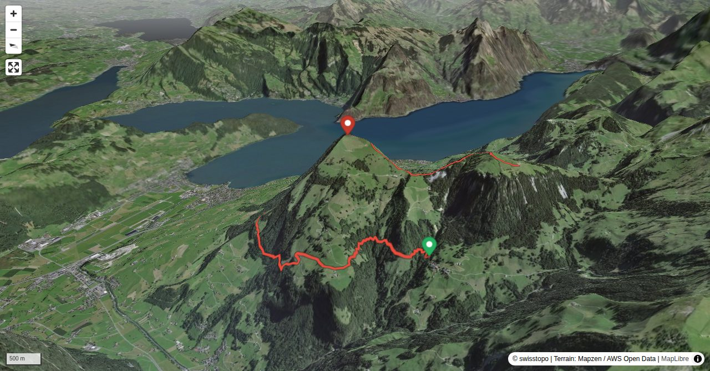

Around Lake Lucerne there are a number of spectacular and very well-known mountains, and several of them are described as a „pyramid“. However, actually there is only one that deserves this characterisation: Buochserhorn. If you sail by boat from Gersau through to Vitznau, do not forget to turn your head south-westward. Like a triangle an almost perfectly shaped mountain towers above the houses of Beckenried. Welcome to Buochserhorn!
On Bleikigrat there are also a number of metallic safety measures (ladders, cables) but the grade of difficulty does not exceed T3+.
Quick Facts
| Summit elevation | 1804 m |
|---|---|
| Difficulty | SAC T4+ Check the route notes below for terrain and commitment level. Guide |
| Trailhead | Niederrickenbach, upper station |
| Region | Northern Alps |
| Canton | Nidwalden |
| Distance | 11.3 km (out-and-back) |
| Total ascent | ~1190 m |
| Elevation range | 937-1804 m |
| Route sources | SAC Route Portal |
Photos

Planning
i
i
sac_scale (precise T1–T6) with
swissTLM3D Wanderwegart
fallback where OSM is silent (coarser T2/T3 and T4+ buckets).
Coverage: OSM 84.7% · swisstopo 2.2% · unknown 12.6%.Elevations computed from the inlined GPX track (SwissTopo height API).
Loading forecast…
Start: Niederrickenbach, upper station (1156 m)
End: Ober Musenalp (1755 m)
Cable car to Niederrickenbach, upper station.
3D Terrain View

Route Details
Niederrickenbach - Buochserhorn – Musenalp
- Niederrickenbach – Schwandenberg P. 1039 1 h 15 min. Schwandenberg P. 1039 – Buochserhorn 3 h. Buochserhorn – Ober Musenalp 1 h 30 min.
Terrain & safety
On the long traverse from P. 1039 to Ribihuisli the trail has occasionally collapsed. The alpine route from there to Guberntossen («Gitzitritt») leads through a very steep forest, is equipped with steel cables and offers a multitude of holds and footholds on roots and trees, but it is very precarious in wet conditions. On Bleikigrat there are also a number of metallic safety measures (ladders, cables) but the grade of difficulty does not exceed T3+.
Source: SAC Route Portal
Field Reference
| Trailhead | Niederrickenbach, upper station | 46.92970, 8.42730 |
|---|---|---|
| Summit | Buochserhorn Musenalp (1804 m) | 46.94558, 8.42874 |
| End | Ober Musenalp (1755 m) | 46.92889, 8.44341 |
Coordinates are WGS84 decimal degrees (lat, lon). Emergency: 112 (general) or 1414 (Rega air rescue). Page URL: